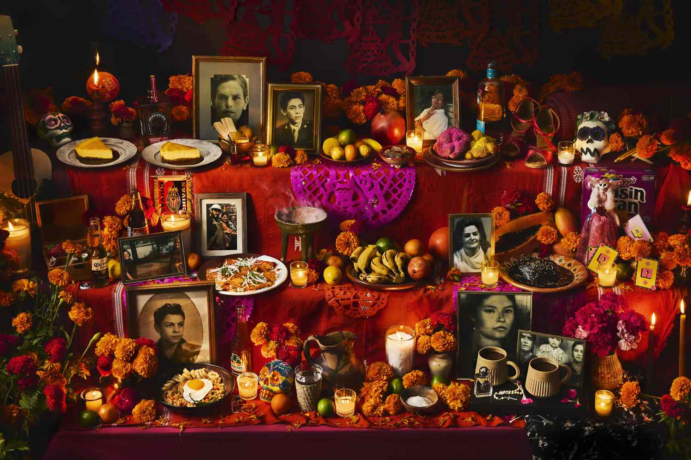
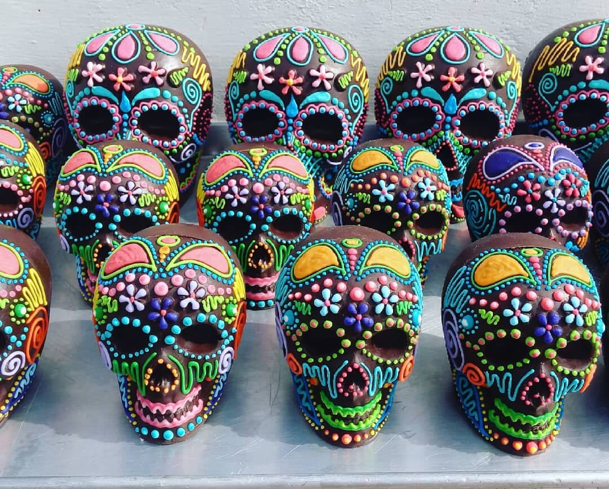

What is Día de los Muertos?
Día de los Muertos, or Day of the Dead, is a beautiful and meaningful tradition celebrated primarily in Mexico on November 1st and 2nd. It is a time to honor and remember loved ones who have passed away, celebrating their lives rather than mourning their loss. This holiday is rooted in indigenous Mexican beliefs and customs, blending Aztec traditions with Catholic influences. Families create altars (ofrendas), decorate with marigold flowers, and share favorite foods of the deceased. The belief is that during these days, the spirits of the departed return to visit their families, bringing joy and reconnecting with the living. It’s a vibrant, colorful celebration of life and death, with an emphasis on remembrance and love.
Traditions of Día de los Muertos
Ofrendas (Altars)
One of the most important traditions is setting up an ofrenda in homes or at cemeteries. These altars are decorated with items that honor the deceased, including:
- Photographs of the departed to remember their lives.
- Marigold flowers (cempasúchil), whose vibrant color and fragrance are said to guide the spirits to their altars.
- Candles to light the way for the returning souls.
- Incense, often from copal or other aromatic woods, to purify the space and invite the spirits to join the celebration.
- Personal items that reflect the personality and tastes of the deceased, like clothing, music, or favorite possessions.
- Water and beverages for the spirits to refresh themselves after their long journey.
The ofrenda serves as a sacred space to welcome back the souls, offering them a place to rest and enjoy the items they loved in life. In some regions, families also place the deceased's favorite foods and drinks on the altar as part of the celebration.
Calaveras (Sugar Skulls) & Face Painting
People paint their faces like calaveras (skulls) as a symbol of embracing death joyfully. The painted faces often feature intricate designs, with bright colors like pink, purple, and yellow, making the skulls appear celebratory rather than morbid. Sugar skulls are decorated with bright colors and names of loved ones, symbolizing that death is not something to fear but something to be celebrated. These skulls are often placed on ofrendas as offerings and reminders of the deceased’s life and legacy. The sugar skulls can also be worn as part of costumes or given as gifts, allowing people to share the joy and remembrance with others.
Parades & Celebrations
Many cities host parades with traditional music, dance, and performers dressed as skeletons. The most famous parade takes place in Mexico City, where the streets fill with colorful floats, dancers, and musicians. People dress as La Catrina, a famous skeleton figure wearing elegant clothing and a large hat, symbolizing the unity of life and death. This iconic figure was created by Mexican artist José Guadalupe Posada and has become a central symbol of the celebration. In addition to the parades, there are festivals, concerts, and community gatherings where people come together to honor the deceased and celebrate life. These events often feature folkloric dances, mariachi bands, and the playing of traditional instruments.
Food & Drinks
Día de los Muertos is also a time for family gatherings where traditional foods are shared, including:
- Pan de muerto – a sweet, round bread decorated to resemble a skull or crossbones. The bread is often flavored with orange blossom and is a symbol of the cycle of life and death.

- Calaveras de azúcar – colorful sugar skulls decorated with icing, often given as gifts or placed on altars. These edible decorations are symbolic of the joyful remembrance of the dead.
- 
- Tamales – masa filled with meats, cheese, or vegetables, wrapped in corn husks and steamed. Tamales are often prepared in large quantities for the celebration, as they are shared among family and friends.
- Atole – a warm, thick drink made from corn, milk, and spices like cinnamon and vanilla. This comforting drink is served alongside pan de muerto and tamales.
- Ofrendas – offerings of favorite foods and drinks of the deceased, often placed on altars during the celebration. The food offerings represent the return of the spirits and the joy of sharing meals with loved ones.
The food at Día de los Muertos is a blend of sacred offerings and festive treats, symbolizing both the physical nourishment of the living and the spiritual sustenance of the dead. Each dish holds significance in remembering the departed, connecting families with their ancestors, and continuing the traditions passed down through generations.
Celebrate Día de los Muertos
Learn about the vibrant customs and rituals of Día de los Muertos with these videos and links: